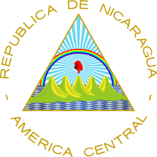
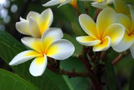
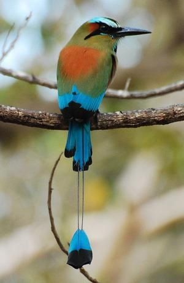
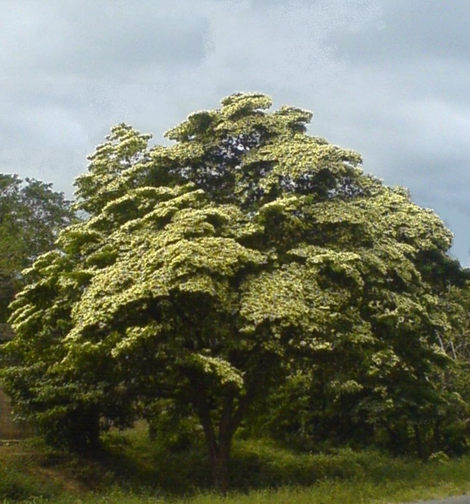

Simbolos Patrios
Escudo Nacional de Nicaragua
Consta de dos elementos, el central y el periférico, siendo el primero un triángulo equilátero de oro que representa la igualdad y la rectitud de la Patria y sus instituciones. En la parte inferior, una cordillera de cinco volcanes verde amarillentos, entre dos océanos en tono azul ultramar, representan la unidad y la fraternidad de las cinco repúblicas centroaméricanas. Alrededor del triángulo el elemento periférico formado por la leyenda en letras de oro: "República de Nicaragua - América Central"; la figura circular que forma la leyenda o divisa simboliza el cielo, la perfección y la eternidad. Los mares representan el Mar Caribe y el Océano Pacífico que bañan las costas del Este y el Oeste del país respectivamente. Un gorro frigio en tono rojo bermellón ilumina la escena con rayos blancos de luz, desde la parte central del triángulo, representando la libertad, teniendo como fondo un cielo en tono azul pálido que simboliza la gloria, el heroísmo y el sacrificio por la libertad. Un arco iris de siete franjas que cubre las montañas, debajo del cual está dicho gorro, representa la paz.
Bandera Nacional de Nicaragua

El origen de los colores de la bandera de Nicaragua data de 1822 cuando el salvadoreño Gral. Manuel José Arce, agitó por primera vez en Centroamérica, la bandera con los colores azul y blanco, cuando le nombran jefe de los milicianos salvadoreños que combatieron contra la anexión de las Provincias de Centroamérica a México. En el mismo año de 1882 el Gral. Arce recordó los colores azul y blanco de la bandera de los próceres argentinos José de San Martín y Manuel Belgrano. Para rendir tributo a la en-seña del Gral. Manuel José Arce, la memorable Asamblea Nacional Constituyente de Centroamérica decreta el azul y blanco como los colores de la primera bandera de la Federación Centroamericana. La Bandera Nicaragüense tiene tres franjas horizontales (dos azules, arriba y abajo) con el escudo nacional en el centro, en la franja blanca. La franja blanca del Pabellón Nacional representa el territorio de la nación y simboliza la pureza de Nicaragua. Las dos franjas azules significan que Nicaragua está bañado por dos océanos.
La Moneda local: El Cordoba
l córdoba fue introducido el 25 de agosto de 1908, bajo la presidencia de Adolfo Díaz, se promulga el Decreto Ley de Conversión Monetaria que la unidad monetaria "Córdoba" y se emite una moneda de 10 córdobas que contiene 1,672 g de oro. Está nueva unidad monetaria remplaza al peso moneda corriente a la siguiente tasa de cambio efectiva de 12½ pesos moneda corriente = 8 reales = 1 peso fuerte = 1 córdoba. Los Billetes del Tesoro fueron cambiados gradualmente por la nueva moneda que tenía un tipo de cambio de paridad de 5 córdobas = 1 libra esterlina. El 13 de noviembre de 1931, el córdoba empezó a cotizarse a un tipo de paridad de 1,10 córdobas = 1 dólar estadounidense. Luego de sucesivas devaluaciones, el córdoba empezó a cotizarse a un tipo de paridad estable de 7 córdobas = 1 dólar estadounidense entre 1946 y abril de 1979.
Historia del Himno Nacional
El Himno Nacional de Nicaragua surgió de un concurso establecido en 1918 por el gobierno de turno. En ese concurso, se pedía escribir dos cuartetos que hablaran sobre el trabajo y la paz, y que se adaptaran a una melodía antes definida. La melodía provenía de un canto litúrgico anónimo utilizado por un frayle llamado Castinove, para acompañar su enseñanza de la fé cristiana a los indígenas de Subtiaba, en las cercanías de la ciudad de León (actualmente Subtiaba forma parte de la ciudad). El ganador del concurso por unanímidad fue el poeta Salomón Ibarra Mayorga, con su producción conocida "Salve a tí, Nicaragua".
Flor Nacional: La Sacuanjoche
Esta colorida flor llamada Sacuanjoche, es la Flor Nacional de Nicaragua. La Sacuanjoche crece en los árboles Plumerian Alba o Frangipani, un tipo de árbol muy angosto que florece en Mayo. El nombre local es Sacuanjoche de origen Náhuatl. La flor aparece en los billetes de 1,5, 10 y 25 centavos que no son frecuentemente utilizados.
Ave Nacional: Guaradabarranco
El pájaro nacional es el Guardabarranco. Esta colorida ave es fácilmente reconocida por su larga cola rematada por dos plumas azul. Los Guardabarranco comen principalmente insectos y cavan un hoyo en la tierra para poner sus huevos. Pueden ser vistos en los bosques de Nicaragua, generalmente en el suroeste. Sus habitats no están limitados por los limites departamentales, ya que puede ser visto hasta en la capital, Managua.
Árbol Nacional: El Madroño
El madroño es el Árbol Nacional de Nicaragua desde 1971. En La Gaceta, Diario Oficial de la República de Nicaragua, número 194, aparece reproducido el Decreto Legislativo No. 1891 por el cual se declara al madroño Árbol Nacional de Nicaragua. A nivel nacional y en cada rincón del país podemos encontrar este árbol quien con sus colores vistosos adorna cualquier lugar donde se encuentre. Actualmente los podemos encontrar en muchas alcaldías del país, sembrado en parques, bulevares, hogares y escuelas.